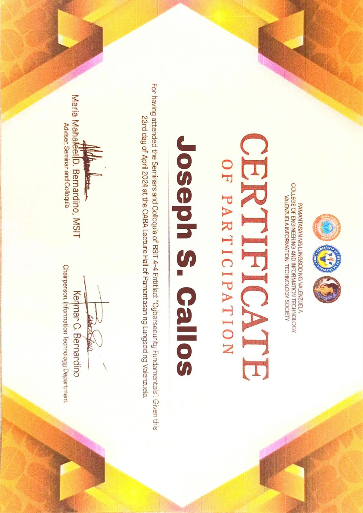
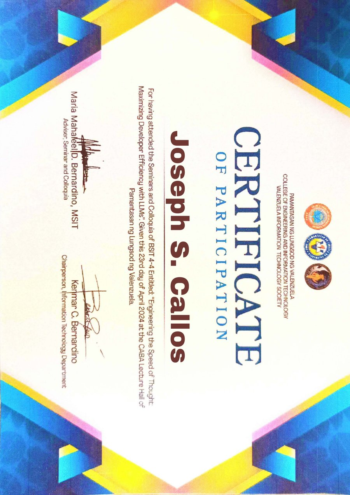
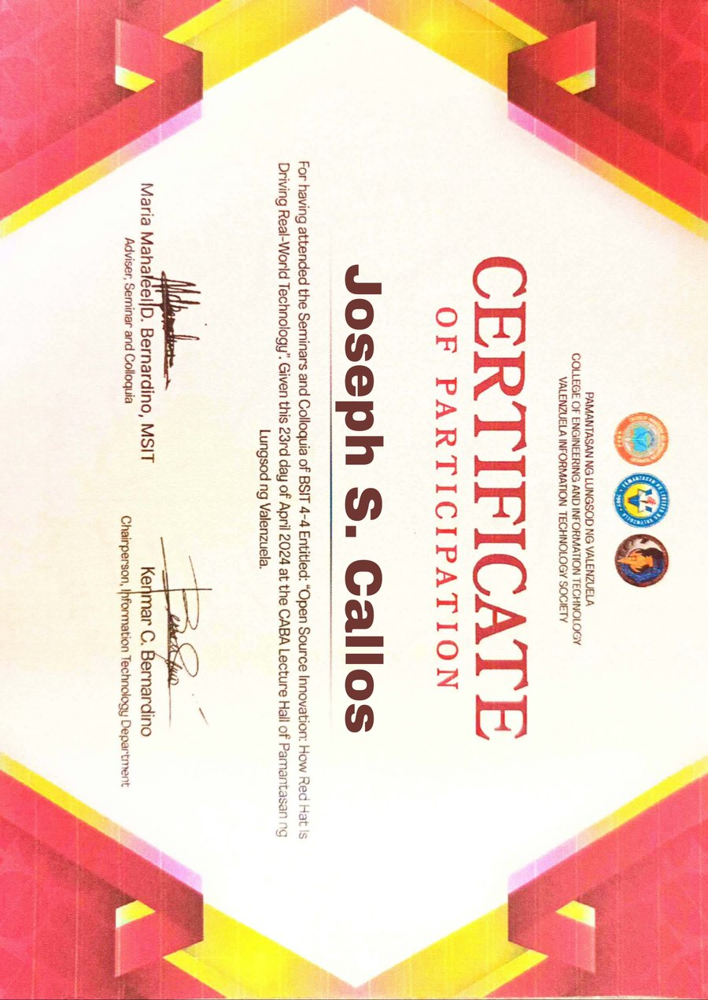
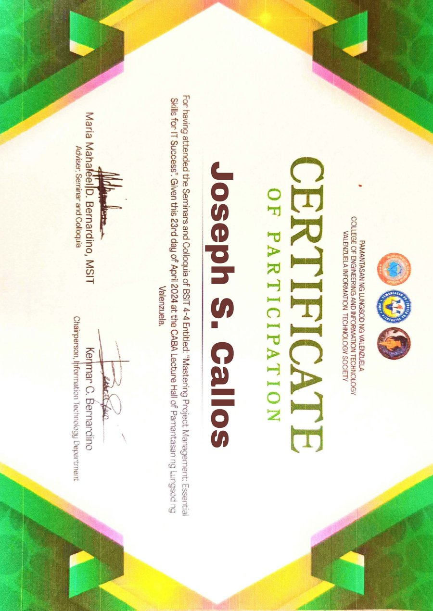
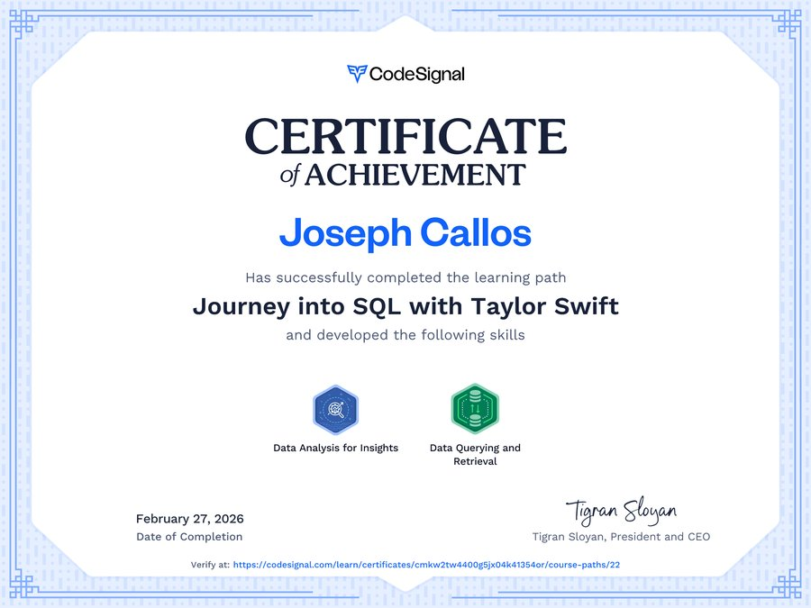
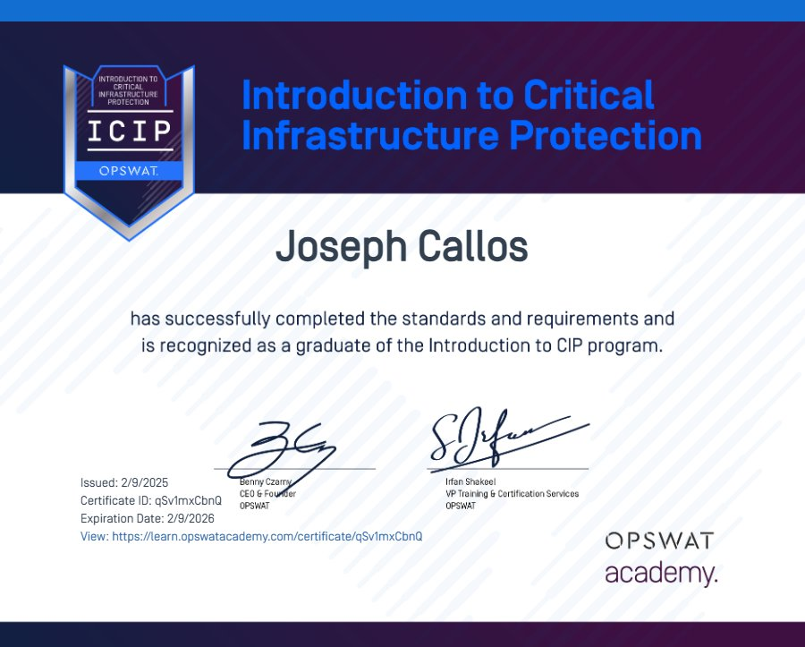

Networks and Wi-Fi
I set up and troubleshoot simulated enterprise networks in Cisco Packet Tracer: routers, switches and diagnosing why a connection is slow.
What I can do for you, the tools I use, and the 11 certificates and seminars behind them.
I set up and troubleshoot simulated enterprise networks in Cisco Packet Tracer: routers, switches and diagnosing why a connection is slow.
HTML5, CSS3, JavaScript and PHP. I build pages that are quick to load, easy to read and work on ordinary phones.
SQL, MySQL and SQLite. I design systems that keep a reliable record, like orders, tickets and stock levels.
Figma, Canva and Photoshop. I turn an idea into a clickable prototype people can try before anything is built.
Desktop tools, data structures and small automations, from a food-expiry tracker to a maths board game.
Seminars and courses in cybersecurity and critical infrastructure protection. I teach the pause-and-verify habit.
Open any certificate to see it in full.
“Behind the Clouds: Exploring Latest Trends in Cloud Computing” — Seminars & Colloquia 2026, PLV.
View certificate
Core principles of cybersecurity, threat defense, and secure systems — CABA Lecture Hall, PLV.
View certificate
Maximizing developer efficiency with large language models — AI-assisted development and prompt engineering.
View certificate
How Red Hat drives real-world technology — enterprise open-source ecosystems and Linux infrastructure.
View certificate
Essential skills for IT success — Agile, Scrum, and practical project management tools.
View certificate
Data analysis for insights, and data querying & retrieval.
View certificate
Critical Infrastructure Protection fundamentals — cybersecurity frameworks and industrial security.
View certificateMachine learning fundamentals, neural networks, AI ethics, and practical applications.
View certificate (PDF)Relational databases, query writing, joins, and aggregations.
View certificate (PDF)Large language models, image generation, prompt engineering, and responsible use.
View certificate (PDF)Simulating networks, configuring routers and switches, and troubleshooting topologies.
View certificate (PDF)I am open to internships, collaborations and IT support questions, especially where explaining things clearly matters as much as fixing them.